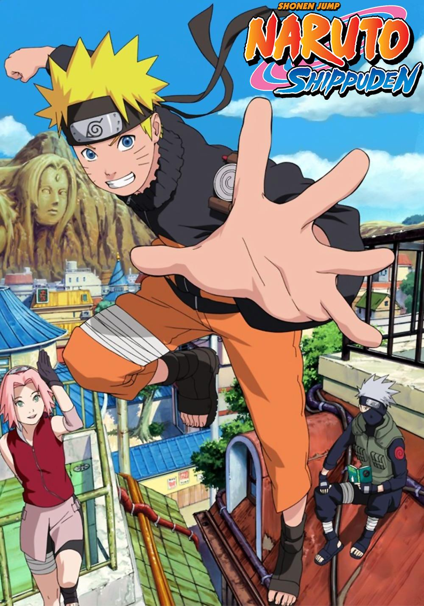

Top Rated Anime Series
Critically acclaimed masterpieces that define the medium.

Fullmetal Alchemist: Brotherhood
Widely considered one of the greatest anime of all time. Perfect storytelling, deep characters, and a satisfying conclusion. Rating: 9.1/10

Naruto
A coming-of-age story about a young ninja's journey to become the Hokage. Rating: 8.9/10

jujutsu-kaisen
A dark fantasy series following Yuji Itadori, a teenager who enters a world of supernatural "Curses" after swallowing a finger belonging to the powerful demon Ryomen Sukuna.Rating: 8.9/10
References
- MyAnimeList Top Anime – Community rankings used for ratings.
- Anime-Planet Top Anime – Additional user scores.
- Crunchyroll Best Anime – Official streaming guide.